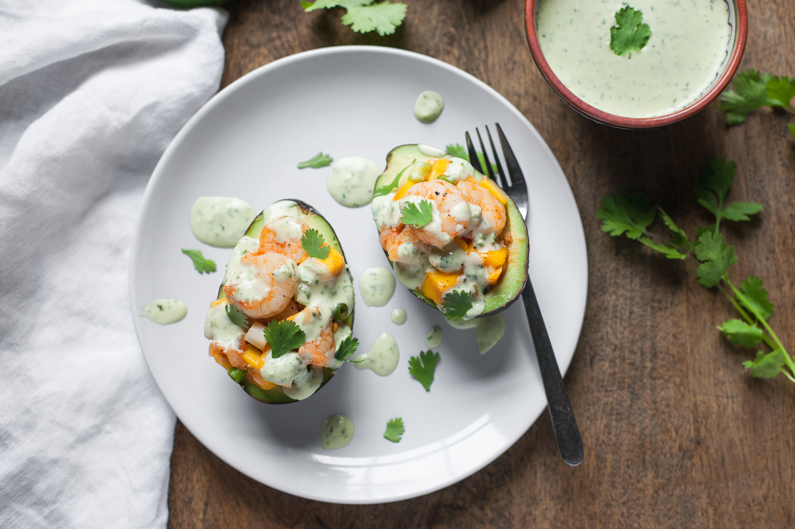
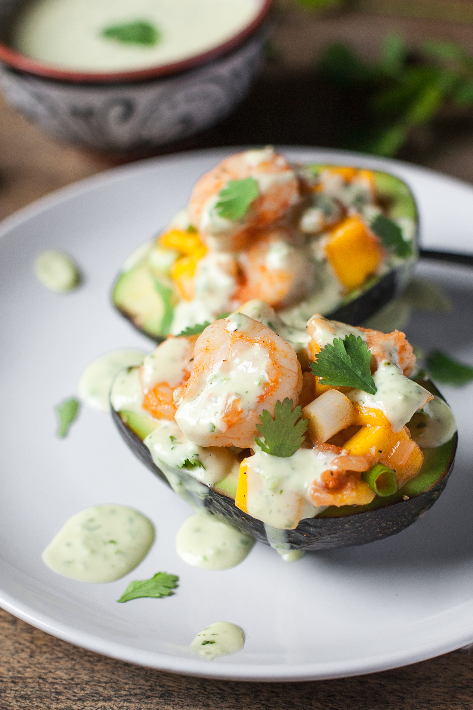
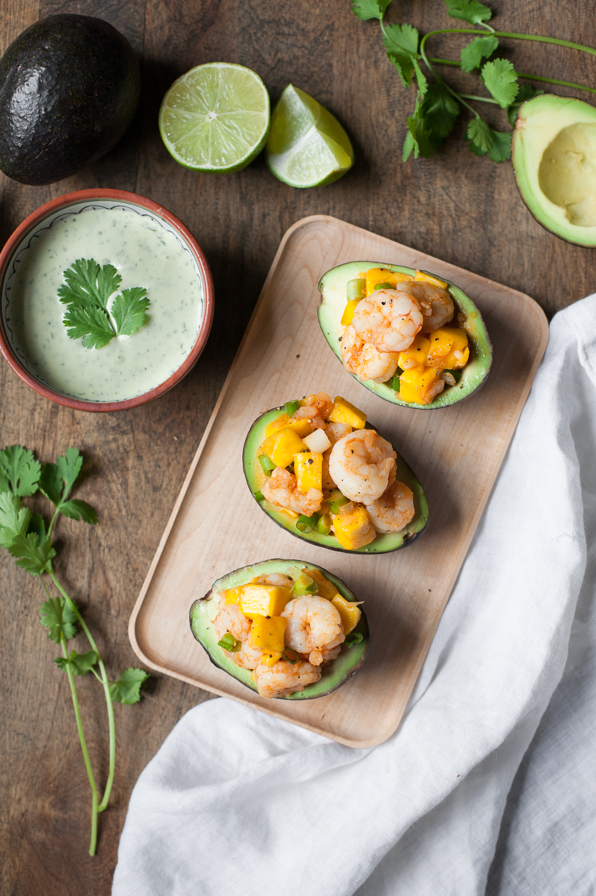

Stuffed Avocados With Shrimp And Mango

INGREDIENTS
FOR THE JALAPENO AIOLI:
- 1 jalapeño pepper, stemmed (deseeded for a milder sauce)
- 1/4 cup packed fresh cilantro leaves and tender stems
- 1/2 cup avocado oil mayo
- 1 tablespoon lime juice, or more to taste
- Sea salt, to taste
- 1/4 cup extra virgin olive oil
FOR THE JALAPENO AIOLI:
- 1 tablespoon avocado oil or olive oil
- 1 large clove garlic, minced
- 1 pound small raw shrimp (40-50 count), peeled and deveined, tails removed
- 1 shallot, minced
- 1/2 teaspoon bittersweet smoked paprika
- Sea salt and freshly ground black pepper, to taste
- 3 champagne mangos, chopped*
- 3 scallions, trimmed and sliced
- Half a lime
- 4 Haas avocados, halved, pits removed
- Chopped cilantro, for serving


INSTRUCTIONS
- To make the aioli, pulse the jalapeño, cilantro, mayo, and lime juice in a food processor until blended. With the food processor running, add the olive oil in a steady stream. Season with sea salt to taste. Set aside while you make the stuffed avocados.
- Heat a large skillet over medium heat and add the oil. When the pan is hot, add the shallot and cook, stirring occasionally, until beginning to brown, 2-3 minutes. Stir in the garlic and cook until fragrant (less than a minute). Raise the heat to medium-high and add the shrimp in a single layer. Sprinkle on the paprika and some salt and pepper. Allow the shrimp to cook for about 3 minutes, then flip over and cook for about 2 minutes on the second side, or until cooked through. Turn off the heat and stir thoroughly to incorporate the seasonings.
- Transfer the shrimp to a bowl and stir in the mango chunks, sliced scallions, and a squeeze of lime. Taste and add more salt, pepper, or lime juice if desired.
- Spoon the shrimp and mango filling into the avocado halves (if the avocado pits are small or you want to fit more filling in each one, you can use a spoon to scoop out some of the avocado flesh). Serve topped with chopped cilantro and the jalapeño aioli.